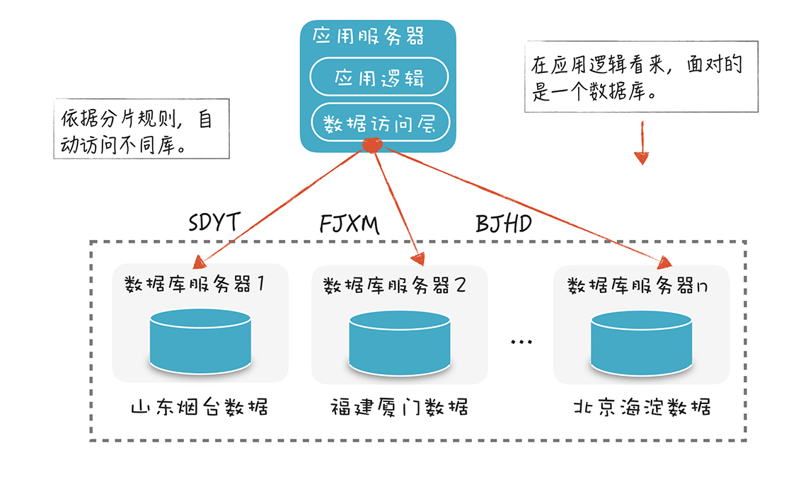

- 00 开篇词 为什么你要学习编译原理？.md.html
- 01 理解代码：编译器的前端技术.md.html
- 02 正则文法和有限自动机：纯手工打造词法分析器.md.html
- 03 语法分析（一）：纯手工打造公式计算器.md.html
- 04 语法分析（二）：解决二元表达式中的难点.md.html
- 05 语法分析（三）：实现一门简单的脚本语言.md.html
- 06 编译器前端工具（一）：用Antlr生成词法、语法分析器.md.html
- 07 编译器前端工具（二）：用Antlr重构脚本语言.md.html
- 08 作用域和生存期：实现块作用域和函数.md.html
- 09 面向对象：实现数据和方法的封装.md.html
- 10 闭包： 理解了原理，它就不反直觉了.md.html
- 11 语义分析（上）：如何建立一个完善的类型系统？.md.html
- 12 语义分析（下）：如何做上下文相关情况的处理？.md.html
- 13 继承和多态：面向对象运行期的动态特性.md.html
- 14 前端技术应用（一）：如何透明地支持数据库分库分表？.md.html
- 15 前端技术应用（二）：如何设计一个报表工具？.md.html
- 16 NFA和DFA：如何自己实现一个正则表达式工具？.md.html
- 17 First和Follow集合：用LL算法推演一个实例.md.html
- 18 移进和规约：用LR算法推演一个实例.md.html
- 19 案例总结与热点问题答疑：对于左递归的语法，为什么我的推导不是左递归的？.md.html
- 20 高效运行：编译器的后端技术.md.html
- 21 运行时机制：突破现象看本质，透过语法看运行时.md.html
- 22 生成汇编代码（一）：汇编语言其实不难学.md.html
- 23 生成汇编代码（二）：把脚本编译成可执行文件.md.html
- 24 中间代码：兼容不同的语言和硬件.md.html
- 25 后端技术的重用：LLVM不仅仅让你高效.md.html
- 26 生成IR：实现静态编译的语言.md.html
- 27 代码优化：为什么你的代码比他的更高效？.md.html
- 28 数据流分析：你写的程序，它更懂.md.html
- 29 目标代码的生成和优化（一）：如何适应各种硬件架构？.md.html
- 30 目标代码的生成和优化（二）：如何适应各种硬件架构？.md.html
- 31 内存计算：对海量数据做计算，到底可以有多快？.md.html
- 32 字节码生成：为什么Spring技术很强大？.md.html
- 33 垃圾收集：能否不停下整个世界？.md.html
- 34 运行时优化：即时编译的原理和作用.md.html
- 35 案例总结与热点问题答疑：后端部分真的比前端部分难吗？.md.html
- 36 当前技术的发展趋势以及其对编译技术的影响.md.html
- 37 云编程：云计算会如何改变编程模式？.md.html
- 38 元编程：一边写程序，一边写语言.md.html
- 加餐 汇编代码编程与栈帧管理.md.html
- 用户故事 因为热爱，所以坚持.md.html
- 第二季回归 这次，我们一起实战解析真实世界的编译器.md.html
- 结束语 用程序语言，推动这个世界的演化.md.html
- 捐赠
14 前端技术应用（一）：如何透明地支持数据库分库分表？
从今天开始，我们正式进入了应用篇，我会用两节课的时间，带你应用编译器的前端技术。这样，你会把学到的编译技术和应用领域更好地结合起来，学以致用，让技术发挥应有的价值。还能通过实践加深对原理的理解，形成一个良好的循环。
这节课，我们主要讨论，一个分布式数据库领域的需求。我会带你设计一个中间层，让应用逻辑不必关心数据库的物理分布。这样，无论把数据库拆成多少个分库，编程时都会像面对一个物理库似的没什么区别。
接下来，我们先了解一下分布式数据库的需求和带来的挑战。
分布式数据库解决了什么问题，又带来了哪些挑战
随着技术的进步，我们编写的应用所采集、处理的数据越来越多，处理的访问请求也越来越多。而单一数据库服务器的处理能力是有限的，当数据量和访问量超过一定级别以后，就要开始做分库分表的操作。比如，把一个数据库的大表拆成几张表，把一个库拆成几个库，把读和写的操作分离开等等。我们把这类技术统称为分布式数据库技术。
分库分表（Sharding）有时也翻译成“数据库分片”。分片可以依据各种不同的策略，比如我开发过一个与社区有关的应用系统，这个系统的很多业务逻辑都是围绕小区展开的。对于这样的系统，按照地理分布的维度来分片就很合适，因为每次对数据库的操作基本上只会涉及其中一个分库。
假设我们有一个订单表，那么就可以依据一定的规则对订单或客户进行编号，编号中就包含地理编码。比如SDYT代表山东烟台，BJHD代表北京海淀，不同区域的数据放在不同的分库中：

通过数据库分片，我们可以提高数据库服务的性能和可伸缩性。当数据量和访问量增加时，增加数据库节点的数量就行了。不过，虽然数据库的分片带来了性能和伸缩性的好处，但它也带来了一些挑战。
最明显的一个挑战，是数据库分片逻辑侵入到业务逻辑中。过去，应用逻辑只访问一个数据库，现在需要根据分片的规则，判断要去访问哪个数据库，再去跟这个数据库服务器连接。如果增加数据库分片，或者对分片策略进行调整，访问数据库的所有应用模块都要修改。这会让软件的维护变得更复杂，显然也不太符合软件工程中模块低耦合、把变化隔离的理念。
所以如果有一种技术，能让我们访问很多数据库分片时，像访问一个数据库那样就好了。数据库的物理分布，对应用是透明的。
可是，“理想很吸引人，现实很骨感”。要实现这个技术，需要解决很多问题：
首先是跨库查询的难题。如果SQL操作都针对一个库还好，但如果某个业务需求恰好要跨多个库，比如上面的例子中，如果要查询多个小区的住户信息，那么就要在多个库中都执行查询，然后把查询结果合并，一般还要排序。
如果我们前端显示的时候需要分页，每页显示一百行，那就更麻烦了。我们不可能从10个分库中各查出10行，合并成100行，这100行不一定排在前面，最差的情况，可能这100行恰好都在其中一个分库里。所以，你可能要从每个分库查出100行来，合并、排序后，再取出前100行。如果涉及数据库表跨库做连接，你想象一下，那就更麻烦了。
其次就是跨库做写入的难题。如果对数据库写入时遇到了跨库的情况，那么就必须实现分布式事务。所以，虽然分布式数据库的愿景很吸引人，但我们必须解决一系列技术问题。
这一讲，我们先解决最简单的问题，也就是当每次数据操作仅针对一个分库的时候，能否自动确定是哪个分库的问题。解决这个问题我们不需要依据别的信息，只需要提供SQL就行了。这就涉及对SQL语句的解析了，自然要用到编译技术。
解析SQL语句，判断访问哪个数据库
我画了一张简化版的示意图：假设有两张表，分别是订单表和客户表，它们的主键是order_id和cust_id：

我们采用的分片策略，是依据这两个主键的前4位的编码来确定数据库分片的逻辑，比如：前四位是SDYT，那就使用山东烟台的分片，如果是BJHD，就使用北京海淀的分片，等等。
在我们的应用中，会对订单表进行一些增删改查的操作，比如会执行下面的SQL语句：
//查询
select * from orders where order_id = 'SDYT20190805XXXX'
select * from orders where cust_id = 'SDYT987645'
//插入
insert into orders (order_id，...其他字段) values( "BJHD20190805XXXX",...)
//修改
update orders set price=298.00 where order_id='FJXM20190805XXXX'
//删除
delete from orders where order_id='SZLG20190805XXXX'
我们要能够解析这样的SQL语句，根据主键字段的值，决定去访问哪个分库或者分表。这就需要用到编译器前端技术，包括词法分析、语法分析和语义分析。
听到这儿，你可能会质疑：“解析SQL语句？是在开玩笑吗？”你可能觉得这个任务太棘手，犹豫着是否要忍受业务逻辑和技术逻辑混杂的缺陷，把判断分片的逻辑写到应用代码里，或者想解决这个问题，又或者想自己写一个开源项目，帮到更多的人。
无论你的内心活动如何，应用编译技术，能让你有更强的信心解决这个问题。那么如何去做呢？要想完成解析SQL的任务，在词法分析和语法分析这两个阶段，我建议你采用工具快速落地，比如Antlr。你要找一个现成的SQL语句的语法规则文件。
GitHub中，那个收集了很多示例Antlr规则文件的项目里，有两个可以参考的规则：一个是PLSQL的（它是Oracle数据库的SQL语法）；一个是SQLite的（这是一个嵌入式数据库）。
实际上，我还找到MySQL workbench所使用的一个产品级的规则文件。MySQL workbench是一个图形化工具，用于管理和访问MySQL。这个规则文件还是很靠谱的，不过它里面嵌了很多属性计算规则，而且是C++语言写的，我嫌处理起来麻烦，就先弃之不用，暂且采用SQLite的规则文件来做示范。
先来看一下这个文件里的一些规则，例如select语句相关的语法：
factored_select_stmt
: ( K_WITH K_RECURSIVE? common_table_expression ( ',' common_table_expression )* )?
select_core ( compound_operator select_core )*
( K_ORDER K_BY ordering_term ( ',' ordering_term )* )?
( K_LIMIT expr ( ( K_OFFSET | ',' ) expr )? )?
;
common_table_expression
: table_name ( '(' column_name ( ',' column_name )* ')' )? K_AS '(' select_stmt ')'
;
select_core
: K_SELECT ( K_DISTINCT | K_ALL )? result_column ( ',' result_column )*
( K_FROM ( table_or_subquery ( ',' table_or_subquery )* | join_clause ) )?
( K_WHERE expr )?
( K_GROUP K_BY expr ( ',' expr )* ( K_HAVING expr )? )?
| K_VALUES '(' expr ( ',' expr )* ')' ( ',' '(' expr ( ',' expr )* ')' )*
;
result_column
: '*'
| table_name '.' '*'
| expr ( K_AS? column_alias )?
;
我们可以一边看这个语法规则，一边想几个select语句做一做验证。你可以思考一下，这个规则是怎么把select语句拆成不同的部分的。
SQL里面也有表达式，我们研究一下它的表达式的规则：
expr
: literal_value
| BIND_PARAMETER
| ( ( database_name '.' )? table_name '.' )? column_name
| unary_operator expr
| expr '||' expr
| expr ( '*' | '/' | '%' ) expr
| expr ( '+' | '-' ) expr
| expr ( '<<' | '>>' | '&' | '|' ) expr
| expr ( '<' | '<=' | '>' | '>=' ) expr
| expr ( '=' | '==' | '!=' | '<>' | K_IS | K_IS K_NOT | K_IN | K_LIKE | K_GLOB | K_MATCH | K_REGEXP ) expr
| expr K_AND expr
| expr K_OR expr
| function_name '(' ( K_DISTINCT? expr ( ',' expr )* | '*' )? ')'
| '(' expr ')'
| K_CAST '(' expr K_AS type_name ')'
| expr K_COLLATE collation_name
| expr K_NOT? ( K_LIKE | K_GLOB | K_REGEXP | K_MATCH ) expr ( K_ESCAPE expr )?
| expr ( K_ISNULL | K_NOTNULL | K_NOT K_NULL )
| expr K_IS K_NOT? expr
| expr K_NOT? K_BETWEEN expr K_AND expr
| expr K_NOT? K_IN ( '(' ( select_stmt
| expr ( ',' expr )*
)?
')'
| ( database_name '.' )? table_name )
| ( ( K_NOT )? K_EXISTS )? '(' select_stmt ')'
| K_CASE expr? ( K_WHEN expr K_THEN expr )+ ( K_ELSE expr )? K_END
| raise_function
;
你可能会觉得SQL的表达式的规则跟其他语言的表达式规则很像。比如都支持加减乘除、关系比较、逻辑运算等等。而且从这个规则文件里，你一下子就能看出各种运算的优先级，比如你会注意到，字符串连接操作“||”比乘法和除法的优先级更高。所以，研究一门语言时积累的经验，在研究下一门语言时仍然有用。
有了规则文件之后，接下来，我们用Antlr生成词法分析器和语法分析器：
antlr -visitor -package dsql.parser SQLite.g4
在这个命令里，我用-package参数指定了生成的Java代码的包是dsql.parser。dsql是分布式SQL的意思。接着，我们可以写一点儿程序测试一下所生成的词法分析器和语法分析器：
String sql = "select order_id from orders where cust_id = 'SDYT987645'";
//词法分析
SQLiteLexer lexer = new SQLiteLexer(CharStreams.fromString(sql));
CommonTokenStream tokens = new CommonTokenStream(lexer);
//语法分析
SQLiteParser parser = new SQLiteParser(tokens);
ParseTree tree = parser.sql_stmt();
//输出lisp格式的AST
System.out.println(tree.toStringTree(parser));
这段程序的输出是LISP格式的AST，我调整了一下缩进，让它显得更像一棵树：
(sql_stmt
(factored_select_stmt
(select_core select
(result_column
(expr
(column_name
(any_name order_id))))
from (table_or_subquery
(table_name
(any_name orders)))
where (expr
(expr
(column_name
(any_name cust_id)))
=
(expr
(literal_value
('SDYT987645'))))))
从AST中，我们可以清晰地看出这个select语句是如何被解析成结构化数据的，再继续写点儿代码，就能获得想要的信息了。
接下来的任务是：对于访问订单表的select语句，要在where子句里找出cust_id=“客户编号”或order_id=“订单编号”这样的条件，从而能够根据客户编号或订单编号确定采用哪个分库。
怎么实现呢？很简单，我们用visitor模式遍历一下AST就可以了：
public String getDBName(String sql) {
//词法解析
SQLiteLexer lexer = new SQLiteLexer(CharStreams.fromString(sql));
CommonTokenStream tokens = new CommonTokenStream(lexer);
//语法解析
SQLiteParser parser = new SQLiteParser(tokens);
ParseTree tree = parser.sql_stmt();
//以lisp格式打印AST
System.out.println(tree.toStringTree(parser));
//获得select语句的要素,包括表名和where条件
SQLVisitor visitor = new SQLVisitor();
SelectStmt select = (SelectStmt) visitor.visit(tree);
String dbName = null;
if (select.tableName.equals("orders")) {
if (select.whereExprs != null) {
for (WhereExpr expr : select.whereExprs) {
//根据cust_id或order_id来确定库的名称
if (expr.columnName.equals("cust_id") || expr.columnName.equals("order_id")) {
//取编号的前4位，即区域编码
String region = expr.value.substring(1, 5);
//根据区域编码，获取库名称
dbName = region2DB.get(region);
break;
}
}
}
}
return dbName;
}
获取表名和where子句条件的代码在SQLVisitor.java中。因为已经有了AST，抽取这些信息是不难的。你可以点开我在文稿中提供的链接，查看示例代码。
我们的示例离实用还有多大差距？
目前，我们已经初步解决了数据库访问透明化的问题。当然，这只是一个示例，如果要做得严密、实用，我们还要补充一些工作。
我们需要做一些语义分析工作，确保SQL语句的合法性。语法分析并不能保证程序代码完全合法，我们必须进行很多语义的检查才行。
我给订单表起的名字，是orders。如果你把表名称改为order，那么必须用引号引起来，写成’order’，不带引号的order会被认为是一个关键字。因为在SQL中我们可以使用order by这样的子句，这时候，order这个表名就会被混淆，进而被解析错误。这个语法解析程序会在表名的地方出现一个order节点，这在语义上是不合法的，需要被检查出来并报错。
如果要检查语义的正确性，我们还必须了解数据库的元数据。否则，就没有办法判断在SQL语句中是否使用了正确的字段，以及正确的数据类型。除此之外，我们还需要扩展到能够识别跨库操作，比如下面这样一个where条件：
order_id = 'FJXM20190805XXXX' or order_id = 'SZLG20190805XXXX'
分析这个查询条件，可以知道数据是存在两个不同的数据库中的。但是我们要让解析程序分析出这个结果，甚至让它针对更加复杂的条件，也能分析出来。这就需要更加深入的语义分析功能了。
最后，解析器的速度也是一个需要考虑的因素。因为执行每个SQL都需要做一次解析，而这个时间就加在了每一次数据库访问上。所以，SQL解析的时间越少越好。因此，有的项目就会尽量提升解析效率。阿里有一个开源项目Druid，是一个数据库连接池。这个项目强调性能，因此他们纯手写了一个SQL解析器，尽可能地提升性能。
总之，要实现一个完善的工具，让工具达到产品级的质量，有不少工作要做。如果要支持更强的分布式数据库功能，还要做更多的工作。不过，你应该不会觉得这事儿有多么难办了吧？至少在编译技术这部分你是有信心的。
在这里，我还想讲一讲SQL防注入这个问题。SQL注入攻击是一种常见的攻击手段。你向服务器请求一个url的时候，可以把恶意的SQL嵌入到参数里面，这样形成的SQL就是不安全的。
以前面的SQL语句为例，这个select语句本来只是查询一个订单，订单编号“SDYT20190805XXXX”作为参数传递给服务端的一个接口，服务端收到参数以后，用单引号把这个参数引起来，并加上其他部分，就组装成下面的SQL并执行：
//原来的SQL
select * from orders where order_id = 'SDYT20190805XXXX'
如果我们遇到了一个恶意攻击者，他可能把参数写成“SDYT20190805XXXX’；drop table customers; –”。服务器接到这个参数以后，仍然把它拿单引号引起来，并组装成SQL，组装完毕以后就是下面的语句：
//被注入恶意SQL后
select * from orders where order_id = 'SDYT20190805XXXX'; drop table customers; --'
如果你看不清楚，我分行写一下，这样你就知道它是怎么把你宝贵的客户信息全都删掉的：
//被注入恶意SQL后
select * from orders where order_id = 'SDYT20190805XXXX';
drop table customers; // 把顾客表给删了
--' //把你加的单引号变成了注释，这样SQL不会出错
所以SQL注入有很大的危害。而我们一般用检查客户端传过来的参数的方法，看看有没有SQL语句中的关键字，来防止SQL注入。不过这是比较浅的防御，有时还会漏过一些非法参数，所以要在SQL执行之前，做最后一遍检查。而这个时候，就要运用编译器前端技术来做SQL的解析了。借此，我们能检查出来异常：明明这个功能是做查询的，为什么形成的SQL会有删除表的操作？
通过这个例子，我们又分析了一种场景：开发一个安全可靠的系统，用编译技术做SQL分析是必须做的一件事情。
课程小结
今天，我带你利用学到的编译器前端技术，解析了SQL语句，并针对分布式数据库透明查询的功能做了一次概念证明。
SQL是程序员经常打交道的语言。有时，我们会遇到需要解析SQL语言的需求，除了分布式数据库场景的需求以外，Hibernate对HQL的解析，也跟解析SQL差不多。而且，最近有一种技术，能够通过RESTful这样的接口做通用的查询，其实也是一种类SQL的子语言。
当然了，今天我们只是基于工具做解析。一方面，有时候我们就是需要做个原型系统或者最小的能用的系统，有时间有资源了，再追求完美也不为过，比如追求编译速度的提升。另一方面，你能看到MySQL workbench也是用Antlr来作帮手的，在很多情况下，Antlr这样的工具生成的解析器足够用，甚至比你手写的还要好，所以，我们大可以节省时间，用工具做解析。
可能你会觉得，实际应用的难度似乎要低于学习原理的难度。如果你有这个感觉，那就对了，这说明你已经掌握了原理篇的内容，所以日常的一些应用根本不是问题，你可以找出更多的应用场景来练练手。
一课一思
你在工作中，是否遇到过其他需要解析SQL的场景？另外，当你阅读了SQL的规则文件之后，是否发现了它跟Java这样的语言规则的不同之处？是更加简单还是更复杂？欢迎在留言区写下你的发现。
最后，感谢你的阅读，如果这篇文章让你有所收获，也欢迎你将它分享给更多的朋友。
© 2019 - 2023 Liangliang Lee. Powered by gin and hexo-theme-book.